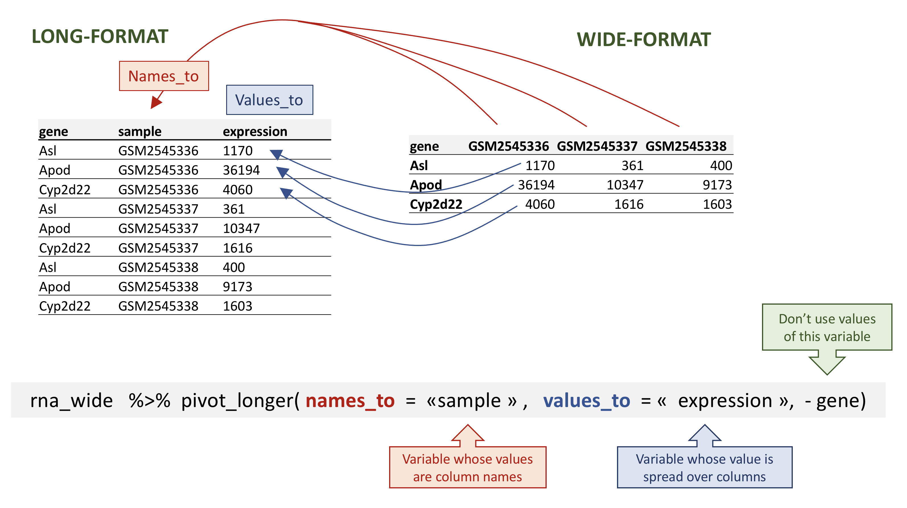

dplyrを用いたデータの操作と解析
最終更新日：2026-11-07 | ページの編集
所要時間： 150分
概要
質問
- tidyverseメタパッケージを用いたRによるデータ分析
目的
-
dplyrおよびtidyrパッケージの目的を説明してください。 - データ操作に極めて有用な、それらの関数をいくつか説明してください。
- ワイド形式とロング形式のテーブルの概念について解説し、データフレームを一方の形式からもう一方の形式へリシェイプする方法を確認します。
- テーブルの結合方法を説明します。
このエピソードは、Data Carpentriesの「生態学者のためのRによるデータ分析と可視化」レッスンに基づいています。
dplyrとtidyrを用いたデータ操作
角括弧による部分指定は便利ですが、特に複雑な操作では煩雑で読みづらくなることがあります。
データを操作する際、いくつかのパッケージを利用することで作業を大幅に効率化できます。Rのパッケージとは、基本的にはより多くの処理を可能にする追加関数の集合です。これまで使用してきたstr()やdata.frame()などの関数はRに標準で組み込まれています。パッケージをロードすることで、その他の特定の関数を利用できるようになります。パッケージを初めて使用する前に、マシンにインストールしておく必要があります。その後、必要になった際は、それ以降のすべてのRセッションでパッケージをインポートしてください。
パッケージ
dplyrは、データ操作タスクのための強力なツールを提供します。データフレームを直接扱うように設計されており、多くの操作タスクが最適化されています。後述するように、特定の解析や可視化を行うために、データフレームの形状を変更したい場合があります。パッケージ
tidyrは、こうしたデータの形状変更というよくある課題に対応し、データを整然と操作するためのツールを提供します。
ワークショップ終了後にdplyrやtidyrについてさらに詳しく知りたい方は、こちらのdplyrを使った便利なデータ変換チートシートや、こちらのtidyrに関するものをご参照ください。
-
tidyverseパッケージは、tidyr、dplyr、ggplot2、tibbleなど、互いにうまく連携するデータ分析用の便利なパッケージを複数インストールする「アンブレラパッケージ」です。これらのパッケージは、データの操作や解析に役立ちます。これにより、データのサブセット抽出、変換、可視化など、さまざまな処理が可能になります。
セットアップを行ったのであれば、すでにtidyverseパッケージがインストールされているはずです。ライブラリからロードして、インストールされているか確認してください。
R
## load the tidyverse packages, incl. dplyr
library("tidyverse")
エラーメッセージ there is no package called ‘tidyverse’
が表示された場合は、このバージョンの R
向けにパッケージがまだインストールされていません。tidyverse
パッケージをインストールするには、以下を入力してください：
R
BiocManager::install("tidyverse")
tidyverse
パッケージをインストールした場合は、上記の library()
コマンドを使用して、このRセッションでロードするのを忘れないでください！
tidyverseによるデータの読み込み
read.csv()の代わりに、tidyverseパッケージreadrのread_csv()関数（.ではなく_となっている点にご注意ください）を用いてデータを読み込みます。
R
rna <- read_csv("data/rnaseq.csv")
## view the data
rna
出力
# A tibble: 32,428 × 19
gene sample expression organism age sex infection strain time tissue
<chr> <chr> <dbl> <chr> <dbl> <chr> <chr> <chr> <dbl> <chr>
1 Asl GSM254… 1170 Mus mus… 8 Fema… Influenz… C57BL… 8 Cereb…
2 Apod GSM254… 36194 Mus mus… 8 Fema… Influenz… C57BL… 8 Cereb…
3 Cyp2d22 GSM254… 4060 Mus mus… 8 Fema… Influenz… C57BL… 8 Cereb…
4 Klk6 GSM254… 287 Mus mus… 8 Fema… Influenz… C57BL… 8 Cereb…
5 Fcrls GSM254… 85 Mus mus… 8 Fema… Influenz… C57BL… 8 Cereb…
6 Slc2a4 GSM254… 782 Mus mus… 8 Fema… Influenz… C57BL… 8 Cereb…
7 Exd2 GSM254… 1619 Mus mus… 8 Fema… Influenz… C57BL… 8 Cereb…
8 Gjc2 GSM254… 288 Mus mus… 8 Fema… Influenz… C57BL… 8 Cereb…
9 Plp1 GSM254… 43217 Mus mus… 8 Fema… Influenz… C57BL… 8 Cereb…
10 Gnb4 GSM254… 1071 Mus mus… 8 Fema… Influenz… C57BL… 8 Cereb…
# ℹ 32,418 more rows
# ℹ 9 more variables: mouse <dbl>, ENTREZID <dbl>, product <chr>,
# ensembl_gene_id <chr>, external_synonym <chr>, chromosome_name <chr>,
# gene_biotype <chr>, phenotype_description <chr>,
# hsapiens_homolog_associated_gene_name <chr>データのクラスが現在「tibble」と呼ばれている点にご留意ください。
Tibblesは、前述で導入したデータフレームオブジェクトの挙動の一部を調整したものです。データ構造はデータフレームと非常に似ています。今回の目的においては、相違点は以下の点のみです。
各列の名前の下に、そのデータ型が表示されます。なお、<
dbl>は、小数点を含む数値を保持するように定義されたデータ型です。データの最初の数行と、1画面に収まる分だけの列しか表示されません。
ここからは、最もよく使われるdplyr関数をいくつか学んでいきましょう。
-
select(): 列のサブセット -
filter(): 条件に基づいて行をサブセット化します -
mutate(): 他の列の情報を用いて新しい列を作成します -
group_by()とsummarise(): グループ化されたデータの要約統計量を作成します -
arrange(): 結果を並べ替える -
count(): 離散値をカウントします
列の選択と行のフィルタリング
データフレームの列を選択するには、select()を使用します。この関数の第1引数はデータフレーム（rna）で、それ以降の引数は保持する列です。
R
select(rna, gene, sample, tissue, expression)
出力
# A tibble: 32,428 × 4
gene sample tissue expression
<chr> <chr> <chr> <dbl>
1 Asl GSM2545336 Cerebellum 1170
2 Apod GSM2545336 Cerebellum 36194
3 Cyp2d22 GSM2545336 Cerebellum 4060
4 Klk6 GSM2545336 Cerebellum 287
5 Fcrls GSM2545336 Cerebellum 85
6 Slc2a4 GSM2545336 Cerebellum 782
7 Exd2 GSM2545336 Cerebellum 1619
8 Gjc2 GSM2545336 Cerebellum 288
9 Plp1 GSM2545336 Cerebellum 43217
10 Gnb4 GSM2545336 Cerebellum 1071
# ℹ 32,418 more rows特定の列以外をすべて選択するには、除外したい変数の前に「-」を付けます。
R
select(rna, -tissue, -organism)
出力
# A tibble: 32,428 × 17
gene sample expression age sex infection strain time mouse ENTREZID
<chr> <chr> <dbl> <dbl> <chr> <chr> <chr> <dbl> <dbl> <dbl>
1 Asl GSM2545… 1170 8 Fema… Influenz… C57BL… 8 14 109900
2 Apod GSM2545… 36194 8 Fema… Influenz… C57BL… 8 14 11815
3 Cyp2d22 GSM2545… 4060 8 Fema… Influenz… C57BL… 8 14 56448
4 Klk6 GSM2545… 287 8 Fema… Influenz… C57BL… 8 14 19144
5 Fcrls GSM2545… 85 8 Fema… Influenz… C57BL… 8 14 80891
6 Slc2a4 GSM2545… 782 8 Fema… Influenz… C57BL… 8 14 20528
7 Exd2 GSM2545… 1619 8 Fema… Influenz… C57BL… 8 14 97827
8 Gjc2 GSM2545… 288 8 Fema… Influenz… C57BL… 8 14 118454
9 Plp1 GSM2545… 43217 8 Fema… Influenz… C57BL… 8 14 18823
10 Gnb4 GSM2545… 1071 8 Fema… Influenz… C57BL… 8 14 14696
# ℹ 32,418 more rows
# ℹ 7 more variables: product <chr>, ensembl_gene_id <chr>,
# external_synonym <chr>, chromosome_name <chr>, gene_biotype <chr>,
# phenotype_description <chr>, hsapiens_homolog_associated_gene_name <chr>これにより、rna 内の tissue と
organism を除くすべての変数が選択されます。
特定の条件に基づいて行を選択するには、filter()を使用します。
R
filter(rna, sex == "Male")
出力
# A tibble: 14,740 × 19
gene sample expression organism age sex infection strain time tissue
<chr> <chr> <dbl> <chr> <dbl> <chr> <chr> <chr> <dbl> <chr>
1 Asl GSM254… 626 Mus mus… 8 Male Influenz… C57BL… 4 Cereb…
2 Apod GSM254… 13021 Mus mus… 8 Male Influenz… C57BL… 4 Cereb…
3 Cyp2d22 GSM254… 2171 Mus mus… 8 Male Influenz… C57BL… 4 Cereb…
4 Klk6 GSM254… 448 Mus mus… 8 Male Influenz… C57BL… 4 Cereb…
5 Fcrls GSM254… 180 Mus mus… 8 Male Influenz… C57BL… 4 Cereb…
6 Slc2a4 GSM254… 313 Mus mus… 8 Male Influenz… C57BL… 4 Cereb…
7 Exd2 GSM254… 2366 Mus mus… 8 Male Influenz… C57BL… 4 Cereb…
8 Gjc2 GSM254… 310 Mus mus… 8 Male Influenz… C57BL… 4 Cereb…
9 Plp1 GSM254… 53126 Mus mus… 8 Male Influenz… C57BL… 4 Cereb…
10 Gnb4 GSM254… 1355 Mus mus… 8 Male Influenz… C57BL… 4 Cereb…
# ℹ 14,730 more rows
# ℹ 9 more variables: mouse <dbl>, ENTREZID <dbl>, product <chr>,
# ensembl_gene_id <chr>, external_synonym <chr>, chromosome_name <chr>,
# gene_biotype <chr>, phenotype_description <chr>,
# hsapiens_homolog_associated_gene_name <chr>R
filter(rna, sex == "Male" & infection == "NonInfected")
出力
# A tibble: 4,422 × 19
gene sample expression organism age sex infection strain time tissue
<chr> <chr> <dbl> <chr> <dbl> <chr> <chr> <chr> <dbl> <chr>
1 Asl GSM254… 535 Mus mus… 8 Male NonInfec… C57BL… 0 Cereb…
2 Apod GSM254… 13668 Mus mus… 8 Male NonInfec… C57BL… 0 Cereb…
3 Cyp2d22 GSM254… 2008 Mus mus… 8 Male NonInfec… C57BL… 0 Cereb…
4 Klk6 GSM254… 1101 Mus mus… 8 Male NonInfec… C57BL… 0 Cereb…
5 Fcrls GSM254… 375 Mus mus… 8 Male NonInfec… C57BL… 0 Cereb…
6 Slc2a4 GSM254… 249 Mus mus… 8 Male NonInfec… C57BL… 0 Cereb…
7 Exd2 GSM254… 3126 Mus mus… 8 Male NonInfec… C57BL… 0 Cereb…
8 Gjc2 GSM254… 791 Mus mus… 8 Male NonInfec… C57BL… 0 Cereb…
9 Plp1 GSM254… 98658 Mus mus… 8 Male NonInfec… C57BL… 0 Cereb…
10 Gnb4 GSM254… 2437 Mus mus… 8 Male NonInfec… C57BL… 0 Cereb…
# ℹ 4,412 more rows
# ℹ 9 more variables: mouse <dbl>, ENTREZID <dbl>, product <chr>,
# ensembl_gene_id <chr>, external_synonym <chr>, chromosome_name <chr>,
# gene_biotype <chr>, phenotype_description <chr>,
# hsapiens_homolog_associated_gene_name <chr>それでは、このデータセットで解析されたマウス遺伝子のヒト相同遺伝子に関心があるとしましょう。この情報は、rna
ティブルの最後の列である
hsapiens_homolog_associated_gene_name
に格納されています。これを分かりやすく可視化するため、gene
と hsapiens_homolog_associated_gene_name
の2つの列のみを含む新しいテーブルを作成します。
R
genes <- select(rna, gene, hsapiens_homolog_associated_gene_name)
genes
出力
# A tibble: 32,428 × 2
gene hsapiens_homolog_associated_gene_name
<chr> <chr>
1 Asl ASL
2 Apod APOD
3 Cyp2d22 CYP2D6
4 Klk6 KLK6
5 Fcrls FCRL2
6 Slc2a4 SLC2A4
7 Exd2 EXD2
8 Gjc2 GJC2
9 Plp1 PLP1
10 Gnb4 GNB4
# ℹ 32,418 more rowsマウスの遺伝子の中には、ヒトの相同遺伝子が存在しないものがあります。これらは、filter()
および、あるものが NA であるかどうかを判定する
is.na() 関数を用いて取得できます。
R
filter(genes, is.na(hsapiens_homolog_associated_gene_name))
出力
# A tibble: 4,290 × 2
gene hsapiens_homolog_associated_gene_name
<chr> <chr>
1 Prodh <NA>
2 Tssk5 <NA>
3 Vmn2r1 <NA>
4 Gm10654 <NA>
5 Hexa <NA>
6 Sult1a1 <NA>
7 Gm6277 <NA>
8 Tmem198b <NA>
9 Adam1a <NA>
10 Ebp <NA>
# ℹ 4,280 more rowsヒトの相同遺伝子を持つマウス遺伝子のみを保持したい場合は、結果を否定する「!」記号を挿入することで、hsapiens_homolog_associated_gene_nameがNAではないすべての行を抽出できます。
R
filter(genes, !is.na(hsapiens_homolog_associated_gene_name))
出力
# A tibble: 28,138 × 2
gene hsapiens_homolog_associated_gene_name
<chr> <chr>
1 Asl ASL
2 Apod APOD
3 Cyp2d22 CYP2D6
4 Klk6 KLK6
5 Fcrls FCRL2
6 Slc2a4 SLC2A4
7 Exd2 EXD2
8 Gjc2 GJC2
9 Plp1 PLP1
10 Gnb4 GNB4
# ℹ 28,128 more rowsパイプ
選択とフィルタリングを同時に行いたい場合はどうすればよいでしょうか。その方法には、中間ステップを使う、ネストした関数を使う、あるいはパイプを使うという3通りがあります。
中間ステップを挟むことで、一時的なデータフレームを作成し、それを次の関数への入力として次のように利用します。
R
rna2 <- filter(rna, sex == "Male")
rna3 <- select(rna2, gene, sample, tissue, expression)
rna3
出力
# A tibble: 14,740 × 4
gene sample tissue expression
<chr> <chr> <chr> <dbl>
1 Asl GSM2545340 Cerebellum 626
2 Apod GSM2545340 Cerebellum 13021
3 Cyp2d22 GSM2545340 Cerebellum 2171
4 Klk6 GSM2545340 Cerebellum 448
5 Fcrls GSM2545340 Cerebellum 180
6 Slc2a4 GSM2545340 Cerebellum 313
7 Exd2 GSM2545340 Cerebellum 2366
8 Gjc2 GSM2545340 Cerebellum 310
9 Plp1 GSM2545340 Cerebellum 53126
10 Gnb4 GSM2545340 Cerebellum 1355
# ℹ 14,730 more rowsこれは読みやすいものの、個別に名前を付ける必要がある中間オブジェクトが大量に発生し、作業スペースが煩雑になることがあります。手順が複数に及ぶと、把握しにくくなる場合があります。
また、次のように関数をネスト（つまり、ある関数の中に別の関数を入れる）することもできます。
R
rna3 <- select(filter(rna, sex == "Male"), gene, sample, tissue, expression)
rna3
出力
# A tibble: 14,740 × 4
gene sample tissue expression
<chr> <chr> <chr> <dbl>
1 Asl GSM2545340 Cerebellum 626
2 Apod GSM2545340 Cerebellum 13021
3 Cyp2d22 GSM2545340 Cerebellum 2171
4 Klk6 GSM2545340 Cerebellum 448
5 Fcrls GSM2545340 Cerebellum 180
6 Slc2a4 GSM2545340 Cerebellum 313
7 Exd2 GSM2545340 Cerebellum 2366
8 Gjc2 GSM2545340 Cerebellum 310
9 Plp1 GSM2545340 Cerebellum 53126
10 Gnb4 GSM2545340 Cerebellum 1355
# ℹ 14,730 more rowsこれは便利ですが、関数が入れ子になりすぎると読みにくくなることがあります。Rは式を内側から外側に向かって評価するためです（この場合は、フィルタリングしてから選択を行います）。
最後のオプションであるパイプは、Rに最近追加された機能です。パイプを使うと、ある関数の出力をそのまま次の関数に送ることができるため、同じデータセットに対して多くの処理を行う際に便利です。
Rにおけるパイプは
%>%（magrittr
パッケージで利用可能）や |>（base
R経由）のような形式になります。RStudioを使用している場合、PCであれば
Ctrl + Shift + M、Macであれば
Cmd + Shift + M と入力できます。
上記のコードでは、パイプを用いて、まずrnaデータセットをfilter()に通してsexがMaleの行を残し、次にselect()に通してgene、sample、tissue、expressionの列のみを残しています。
パイプ |>
は、左側のオブジェクトを受け取り、それを右側の関数の第1引数としてそのまま渡します。そのため、filter()
や select()
関数の引数としてデータフレームを明示的に指定する必要はもうありません。
R
rna |>
filter(sex == "Male") |>
select(gene, sample, tissue, expression)
出力
# A tibble: 14,740 × 4
gene sample tissue expression
<chr> <chr> <chr> <dbl>
1 Asl GSM2545340 Cerebellum 626
2 Apod GSM2545340 Cerebellum 13021
3 Cyp2d22 GSM2545340 Cerebellum 2171
4 Klk6 GSM2545340 Cerebellum 448
5 Fcrls GSM2545340 Cerebellum 180
6 Slc2a4 GSM2545340 Cerebellum 313
7 Exd2 GSM2545340 Cerebellum 2366
8 Gjc2 GSM2545340 Cerebellum 310
9 Plp1 GSM2545340 Cerebellum 53126
10 Gnb4 GSM2545340 Cerebellum 1355
# ℹ 14,730 more rowsパイプを「then」という単語のように読むと分かりやすいと感じる方もいるかもしれません。例えば、上記の例では、データフレーム
rna を取り出し、then sex == "Male"
を持つ行を filter し、then 列
gene、sample、tissue、expression
を select しました。
dplyr
関数単体ではいたってシンプルですが、パイプを用いて線形なワークフローに組み合わせることで、データフレームに対してより複雑な操作を行うことができます。
この小規模版のデータを用いて新しいオブジェクトを作成したい場合は、それに新しい名前を付けることができます。
R
rna3 <- rna |>
filter(sex == "Male") |>
select(gene, sample, tissue, expression)
rna3
出力
# A tibble: 14,740 × 4
gene sample tissue expression
<chr> <chr> <chr> <dbl>
1 Asl GSM2545340 Cerebellum 626
2 Apod GSM2545340 Cerebellum 13021
3 Cyp2d22 GSM2545340 Cerebellum 2171
4 Klk6 GSM2545340 Cerebellum 448
5 Fcrls GSM2545340 Cerebellum 180
6 Slc2a4 GSM2545340 Cerebellum 313
7 Exd2 GSM2545340 Cerebellum 2366
8 Gjc2 GSM2545340 Cerebellum 310
9 Plp1 GSM2545340 Cerebellum 53126
10 Gnb4 GSM2545340 Cerebellum 1355
# ℹ 14,730 more rows課題：
パイプを用いてrnaデータをサブセットし、時刻0における雌マウスの観測値のうち、遺伝子発現量が50000を超えるものを抽出し、gene、sample、time、expression、ageの各列のみを保持してください。
R
rna |>
filter(expression > 50000,
sex == "Female",
time == 0 ) |>
select(gene, sample, time, expression, age)
出力
# A tibble: 9 × 5
gene sample time expression age
<chr> <chr> <dbl> <dbl> <dbl>
1 Plp1 GSM2545337 0 101241 8
2 Atp1b1 GSM2545337 0 53260 8
3 Plp1 GSM2545338 0 96534 8
4 Atp1b1 GSM2545338 0 50614 8
5 Plp1 GSM2545348 0 102790 8
6 Atp1b1 GSM2545348 0 59544 8
7 Plp1 GSM2545353 0 71237 8
8 Glul GSM2545353 0 52451 8
9 Atp1b1 GSM2545353 0 61451 8列の作成・変更（mutate）
既存の列の値に基づいて、例えば単位換算を行ったり、2つの列の値の比率を求めたりするために、新しい列を作成したいことがよくあります。ここではmutate()を使用します。
時間（単位：時間）の新しい列を作成するには：
R
rna |>
mutate(time_hours = time * 24) |>
select(time, time_hours)
出力
# A tibble: 32,428 × 2
time time_hours
<dbl> <dbl>
1 8 192
2 8 192
3 8 192
4 8 192
5 8 192
6 8 192
7 8 192
8 8 192
9 8 192
10 8 192
# ℹ 32,418 more rowsまた、mutate()
の同一呼び出し内で、最初の新規列に基づいて2つ目の新規列を作成することもできます。
R
rna |>
mutate(time_hours = time * 24,
time_mn = time_hours * 60) |>
select(time, time_hours, time_mn)
出力
# A tibble: 32,428 × 3
time time_hours time_mn
<dbl> <dbl> <dbl>
1 8 192 11520
2 8 192 11520
3 8 192 11520
4 8 192 11520
5 8 192 11520
6 8 192 11520
7 8 192 11520
8 8 192 11520
9 8 192 11520
10 8 192 11520
# ℹ 32,418 more rows課題
rnaのデータから、以下の条件を満たす新しいデータフレームを作成してください。gene、chromosome_name、phenotype_description、sample、およびexpressionの列のみを含むものとします。発現値は対数変換してください。このデータフレームには、性染色体上に位置し、phenotype_descriptionに関連付けられており、かつ対数発現値が5を超える遺伝子のみを含める必要があります。
ヒント: このデータフレームを生成するには、コマンドをどのような順序で並べればよいか考えてみてください！
R
rna |>
mutate(expression = log(expression)) |>
select(gene, chromosome_name, phenotype_description, sample, expression) |>
filter(chromosome_name == "X" | chromosome_name == "Y") |>
filter(!is.na(phenotype_description)) |>
filter(expression > 5)
出力
# A tibble: 649 × 5
gene chromosome_name phenotype_description sample expression
<chr> <chr> <chr> <chr> <dbl>
1 Plp1 X abnormal CNS glial cell morphology GSM25… 10.7
2 Slc7a3 X decreased body length GSM25… 5.46
3 Plxnb3 X abnormal coat appearance GSM25… 6.58
4 Rbm3 X abnormal liver morphology GSM25… 9.32
5 Cfp X abnormal cardiovascular system phys… GSM25… 6.18
6 Ebp X abnormal embryonic erythrocyte morp… GSM25… 6.68
7 Cd99l2 X abnormal cellular extravasation GSM25… 8.04
8 Piga X abnormal brain development GSM25… 6.06
9 Pim2 X decreased T cell proliferation GSM25… 7.11
10 Itm2a X no abnormal phenotype detected GSM25… 7.48
# ℹ 639 more rows分割・適用・結合によるデータ分析
多くのデータ分析タスクは、split-apply-combine
パラダイムを用いて取り組むことができます。つまり、データをグループに分割し、各グループに何らかの分析を適用し、その結果を統合するという手法です。dplyr
では、group_by()
関数を用いることで、これを非常に簡単に実現できます。
R
rna |>
group_by(gene)
出力
# A tibble: 32,428 × 19
# Groups: gene [1,474]
gene sample expression organism age sex infection strain time tissue
<chr> <chr> <dbl> <chr> <dbl> <chr> <chr> <chr> <dbl> <chr>
1 Asl GSM254… 1170 Mus mus… 8 Fema… Influenz… C57BL… 8 Cereb…
2 Apod GSM254… 36194 Mus mus… 8 Fema… Influenz… C57BL… 8 Cereb…
3 Cyp2d22 GSM254… 4060 Mus mus… 8 Fema… Influenz… C57BL… 8 Cereb…
4 Klk6 GSM254… 287 Mus mus… 8 Fema… Influenz… C57BL… 8 Cereb…
5 Fcrls GSM254… 85 Mus mus… 8 Fema… Influenz… C57BL… 8 Cereb…
6 Slc2a4 GSM254… 782 Mus mus… 8 Fema… Influenz… C57BL… 8 Cereb…
7 Exd2 GSM254… 1619 Mus mus… 8 Fema… Influenz… C57BL… 8 Cereb…
8 Gjc2 GSM254… 288 Mus mus… 8 Fema… Influenz… C57BL… 8 Cereb…
9 Plp1 GSM254… 43217 Mus mus… 8 Fema… Influenz… C57BL… 8 Cereb…
10 Gnb4 GSM254… 1071 Mus mus… 8 Fema… Influenz… C57BL… 8 Cereb…
# ℹ 32,418 more rows
# ℹ 9 more variables: mouse <dbl>, ENTREZID <dbl>, product <chr>,
# ensembl_gene_id <chr>, external_synonym <chr>, chromosome_name <chr>,
# gene_biotype <chr>, phenotype_description <chr>,
# hsapiens_homolog_associated_gene_name <chr>group_by()関数はデータ処理を行わず、データをサブセットにグループ化します。上記の例では、初期のtibbleに含まれる32428個の観測値が、gene変数に基づいて1474個のグループに分割されます。
同様に、tibbleをサンプルごとにグループ化することもできます。
R
rna |>
group_by(sample)
出力
# A tibble: 32,428 × 19
# Groups: sample [22]
gene sample expression organism age sex infection strain time tissue
<chr> <chr> <dbl> <chr> <dbl> <chr> <chr> <chr> <dbl> <chr>
1 Asl GSM254… 1170 Mus mus… 8 Fema… Influenz… C57BL… 8 Cereb…
2 Apod GSM254… 36194 Mus mus… 8 Fema… Influenz… C57BL… 8 Cereb…
3 Cyp2d22 GSM254… 4060 Mus mus… 8 Fema… Influenz… C57BL… 8 Cereb…
4 Klk6 GSM254… 287 Mus mus… 8 Fema… Influenz… C57BL… 8 Cereb…
5 Fcrls GSM254… 85 Mus mus… 8 Fema… Influenz… C57BL… 8 Cereb…
6 Slc2a4 GSM254… 782 Mus mus… 8 Fema… Influenz… C57BL… 8 Cereb…
7 Exd2 GSM254… 1619 Mus mus… 8 Fema… Influenz… C57BL… 8 Cereb…
8 Gjc2 GSM254… 288 Mus mus… 8 Fema… Influenz… C57BL… 8 Cereb…
9 Plp1 GSM254… 43217 Mus mus… 8 Fema… Influenz… C57BL… 8 Cereb…
10 Gnb4 GSM254… 1071 Mus mus… 8 Fema… Influenz… C57BL… 8 Cereb…
# ℹ 32,418 more rows
# ℹ 9 more variables: mouse <dbl>, ENTREZID <dbl>, product <chr>,
# ensembl_gene_id <chr>, external_synonym <chr>, chromosome_name <chr>,
# gene_biotype <chr>, phenotype_description <chr>,
# hsapiens_homolog_associated_gene_name <chr>ここでは、32428 個の観測値からなる初期の tibble
を、sample 変数に基づいて 22 個のグループに分割します。
データをグループ化した後は、以降の処理は各グループに対して個別に適用されます。
summarise()関数
group_by()はsummarise()と併用されることが多く、これにより各グループがそのグループの1行の要約にまとめられます。
group_by()は、要約統計量を算出したいカテゴリカル変数を含む列名を引数として受け取ります。したがって、遺伝子ごとの平均値
expression を算出するには：
R
rna |>
group_by(gene) |>
summarise(mean_expression = mean(expression))
出力
# A tibble: 1,474 × 2
gene mean_expression
<chr> <dbl>
1 AI504432 1053.
2 AW046200 131.
3 AW551984 295.
4 Aamp 4751.
5 Abca12 4.55
6 Abcc8 2498.
7 Abhd14a 525.
8 Abi2 4909.
9 Abi3bp 1002.
10 Abl2 2124.
# ℹ 1,464 more rowsまた、各サンプルにおける全遺伝子の平均発現量を算出したい場合もあるでしょう。
R
rna |>
group_by(sample) |>
summarise(mean_expression = mean(expression))
出力
# A tibble: 22 × 2
sample mean_expression
<chr> <dbl>
1 GSM2545336 2062.
2 GSM2545337 1766.
3 GSM2545338 1668.
4 GSM2545339 1696.
5 GSM2545340 1682.
6 GSM2545341 1638.
7 GSM2545342 1594.
8 GSM2545343 2107.
9 GSM2545344 1712.
10 GSM2545345 1700.
# ℹ 12 more rowsまた、複数の列でグループ化することも可能です。
R
rna |>
group_by(gene, infection, time) |>
summarise(mean_expression = mean(expression))
出力
`summarise()` has regrouped the output.
ℹ Summaries were computed grouped by gene, infection, and time.
ℹ Output is grouped by gene and infection.
ℹ Use `summarise(.groups = "drop_last")` to silence this message.
ℹ Use `summarise(.by = c(gene, infection, time))` for per-operation grouping
(`?dplyr::dplyr_by`) instead.出力
# A tibble: 4,422 × 4
# Groups: gene, infection [2,948]
gene infection time mean_expression
<chr> <chr> <dbl> <dbl>
1 AI504432 InfluenzaA 4 1104.
2 AI504432 InfluenzaA 8 1014
3 AI504432 NonInfected 0 1034.
4 AW046200 InfluenzaA 4 152.
5 AW046200 InfluenzaA 8 81
6 AW046200 NonInfected 0 155.
7 AW551984 InfluenzaA 4 302.
8 AW551984 InfluenzaA 8 342.
9 AW551984 NonInfected 0 238
10 Aamp InfluenzaA 4 4870
# ℹ 4,412 more rowsデータをグループ化した後は、複数の変数を同時に（必ずしも同一の変数である必要はありません）集計することも可能です。例えば、遺伝子別および条件別に中央値
expression を示す列を追加できます。
R
rna |>
group_by(gene, infection, time) |>
summarise(mean_expression = mean(expression),
median_expression = median(expression))
出力
`summarise()` has regrouped the output.
ℹ Summaries were computed grouped by gene, infection, and time.
ℹ Output is grouped by gene and infection.
ℹ Use `summarise(.groups = "drop_last")` to silence this message.
ℹ Use `summarise(.by = c(gene, infection, time))` for per-operation grouping
(`?dplyr::dplyr_by`) instead.出力
# A tibble: 4,422 × 5
# Groups: gene, infection [2,948]
gene infection time mean_expression median_expression
<chr> <chr> <dbl> <dbl> <dbl>
1 AI504432 InfluenzaA 4 1104. 1094.
2 AI504432 InfluenzaA 8 1014 985
3 AI504432 NonInfected 0 1034. 1016
4 AW046200 InfluenzaA 4 152. 144.
5 AW046200 InfluenzaA 8 81 82
6 AW046200 NonInfected 0 155. 163
7 AW551984 InfluenzaA 4 302. 245
8 AW551984 InfluenzaA 8 342. 287
9 AW551984 NonInfected 0 238 265
10 Aamp InfluenzaA 4 4870 4708
# ℹ 4,412 more rows課題
時点ごとの遺伝子「Dok3」の平均発現量を算出してください。
R
rna |>
filter(gene == "Dok3") |>
group_by(time) |>
summarise(mean = mean(expression))
出力
# A tibble: 3 × 2
time mean
<dbl> <dbl>
1 0 169
2 4 156.
3 8 61 カウント
データを扱う際、各因子または因子の組み合わせごとに観測数を確認したいことがよくあります。この操作には、dplyr
で count()
を提供します。例えば、感染サンプルと非感染サンプルそれぞれのデータ行数を数えたい場合は、次のように記述します。
R
rna |>
count(infection)
出力
# A tibble: 2 × 2
infection n
<chr> <int>
1 InfluenzaA 22110
2 NonInfected 10318count()
関数は、すでに見てきた手法の簡略表記です。具体的には、変数でグループ化し、そのグループ内の観測数を集計するものです。言い換えれば、rna |> count(infection)
は以下と同等です。
R
rna |>
group_by(infection) |>
summarise(n = n())
出力
# A tibble: 2 × 2
infection n
<chr> <int>
1 InfluenzaA 22110
2 NonInfected 10318前述の例では、count()
を用いて1つの因子（すなわち
infection）の行数／観測数をカウントしています。infection
と time
のような因子の組み合わせをカウントしたい場合は、count()
の引数として第1因子と第2因子を指定します：
R
rna |>
count(infection, time)
出力
# A tibble: 3 × 3
infection time n
<chr> <dbl> <int>
1 InfluenzaA 4 11792
2 InfluenzaA 8 10318
3 NonInfected 0 10318これは以下と同等です。
R
rna |>
group_by(infection, time) |>
summarise(n = n())
出力
`summarise()` has regrouped the output.
ℹ Summaries were computed grouped by infection and time.
ℹ Output is grouped by infection.
ℹ Use `summarise(.groups = "drop_last")` to silence this message.
ℹ Use `summarise(.by = c(infection, time))` for per-operation grouping
(`?dplyr::dplyr_by`) instead.出力
# A tibble: 3 × 3
# Groups: infection [2]
infection time n
<chr> <dbl> <int>
1 InfluenzaA 4 11792
2 InfluenzaA 8 10318
3 NonInfected 0 10318比較を容易にするために、結果を並べ替えると便利な場合があります。テーブルの並べ替えには
arrange()
を使用できます。例えば、上記のテーブルを時間順に並べ替えたい場合などが考えられます。
R
rna |>
count(infection, time) |>
arrange(time)
出力
# A tibble: 3 × 3
infection time n
<chr> <dbl> <int>
1 NonInfected 0 10318
2 InfluenzaA 4 11792
3 InfluenzaA 8 10318または件数で：
R
rna |>
count(infection, time) |>
arrange(n)
出力
# A tibble: 3 × 3
infection time n
<chr> <dbl> <int>
1 InfluenzaA 8 10318
2 NonInfected 0 10318
3 InfluenzaA 4 11792降順に並べ替えるには、desc()関数を追加する必要があります。
R
rna |>
count(infection, time) |>
arrange(desc(n))
出力
# A tibble: 3 × 3
infection time n
<chr> <dbl> <int>
1 InfluenzaA 4 11792
2 InfluenzaA 8 10318
3 NonInfected 0 10318課題
- 各サンプルで解析された遺伝子数はいくつですか？
-
group_by()とsummarise()を用いて、各サンプルのシーケンシング深度（全カウントの合計）を算出してください。最もシーケンシング深度が高いサンプルはどれですか？ - サンプルを1つ選び、バイオタイプごとの遺伝子数を算出してください。
- 「abnormal DNA methylation」という表現型の説明に関連する遺伝子を特定し、時刻0、4、8におけるそれらの平均発現量（対数スケール）を算出してください。
R
## 1.
rna |>
count(sample)
出力
# A tibble: 22 × 2
sample n
<chr> <int>
1 GSM2545336 1474
2 GSM2545337 1474
3 GSM2545338 1474
4 GSM2545339 1474
5 GSM2545340 1474
6 GSM2545341 1474
7 GSM2545342 1474
8 GSM2545343 1474
9 GSM2545344 1474
10 GSM2545345 1474
# ℹ 12 more rowsR
## 2.
rna |>
group_by(sample) |>
summarise(seq_depth = sum(expression)) |>
arrange(desc(seq_depth))
出力
# A tibble: 22 × 2
sample seq_depth
<chr> <dbl>
1 GSM2545350 3255566
2 GSM2545352 3216163
3 GSM2545343 3105652
4 GSM2545336 3039671
5 GSM2545380 3036098
6 GSM2545353 2953249
7 GSM2545348 2913678
8 GSM2545362 2913517
9 GSM2545351 2782464
10 GSM2545349 2758006
# ℹ 12 more rowsR
## 3.
rna |>
filter(sample == "GSM2545336") |>
count(gene_biotype) |>
arrange(desc(n))
出力
# A tibble: 13 × 2
gene_biotype n
<chr> <int>
1 protein_coding 1321
2 lncRNA 69
3 processed_pseudogene 59
4 miRNA 7
5 snoRNA 5
6 TEC 4
7 polymorphic_pseudogene 2
8 unprocessed_pseudogene 2
9 IG_C_gene 1
10 scaRNA 1
11 transcribed_processed_pseudogene 1
12 transcribed_unitary_pseudogene 1
13 transcribed_unprocessed_pseudogene 1R
## 4.
rna |>
filter(phenotype_description == "abnormal DNA methylation") |>
group_by(gene, time) |>
summarise(mean_expression = mean(log(expression))) |>
arrange()
出力
`summarise()` has regrouped the output.
ℹ Summaries were computed grouped by gene and time.
ℹ Output is grouped by gene.
ℹ Use `summarise(.groups = "drop_last")` to silence this message.
ℹ Use `summarise(.by = c(gene, time))` for per-operation grouping
(`?dplyr::dplyr_by`) instead.出力
# A tibble: 6 × 3
# Groups: gene [2]
gene time mean_expression
<chr> <dbl> <dbl>
1 Xist 0 6.95
2 Xist 4 6.34
3 Xist 8 7.13
4 Zdbf2 0 6.27
5 Zdbf2 4 6.27
6 Zdbf2 8 6.19データの再整形
rna ティブルの行には、他の2つの変数 gene と
sample
の組み合わせに関連付けられた発現値（単位）が含まれています。
その他の列はすべて、サンプル（生物種、年齢、性別、…）または遺伝子（gene_biotype、ENTREZ_ID、産物、…）を表す変数に対応しています。遺伝子やサンプルによって変化しない変数は、すべての行で同一の値となります。
R
rna |>
arrange(gene)
出力
# A tibble: 32,428 × 19
gene sample expression organism age sex infection strain time tissue
<chr> <chr> <dbl> <chr> <dbl> <chr> <chr> <chr> <dbl> <chr>
1 AI504432 GSM25… 1230 Mus mus… 8 Fema… Influenz… C57BL… 8 Cereb…
2 AI504432 GSM25… 1085 Mus mus… 8 Fema… NonInfec… C57BL… 0 Cereb…
3 AI504432 GSM25… 969 Mus mus… 8 Fema… NonInfec… C57BL… 0 Cereb…
4 AI504432 GSM25… 1284 Mus mus… 8 Fema… Influenz… C57BL… 4 Cereb…
5 AI504432 GSM25… 966 Mus mus… 8 Male Influenz… C57BL… 4 Cereb…
6 AI504432 GSM25… 918 Mus mus… 8 Male Influenz… C57BL… 8 Cereb…
7 AI504432 GSM25… 985 Mus mus… 8 Fema… Influenz… C57BL… 8 Cereb…
8 AI504432 GSM25… 972 Mus mus… 8 Male NonInfec… C57BL… 0 Cereb…
9 AI504432 GSM25… 1000 Mus mus… 8 Fema… Influenz… C57BL… 4 Cereb…
10 AI504432 GSM25… 816 Mus mus… 8 Male Influenz… C57BL… 4 Cereb…
# ℹ 32,418 more rows
# ℹ 9 more variables: mouse <dbl>, ENTREZID <dbl>, product <chr>,
# ensembl_gene_id <chr>, external_synonym <chr>, chromosome_name <chr>,
# gene_biotype <chr>, phenotype_description <chr>,
# hsapiens_homolog_associated_gene_name <chr>この構造は、1つの列にすべての値が含まれ、他の列にその値のコンテキストが列挙されているため、long-formatと呼ばれます。
場合によっては、long-formatは必ずしも「人間が読みやすい」とは言えず、データをよりコンパクトに表現できる別の形式であるwide-formatが好まれます。これは通常、科学者が行列形式（行が遺伝子、列がサンプルを表す形式）で見慣れている遺伝子発現値の場合に当てはまります。
この形式であれば、サンプル内およびサンプル間における遺伝子発現レベルの関係を容易に解析できるようになります。
出力
# A tibble: 1,474 × 23
gene GSM2545336 GSM2545337 GSM2545338 GSM2545339 GSM2545340 GSM2545341
<chr> <dbl> <dbl> <dbl> <dbl> <dbl> <dbl>
1 Asl 1170 361 400 586 626 988
2 Apod 36194 10347 9173 10620 13021 29594
3 Cyp2d22 4060 1616 1603 1901 2171 3349
4 Klk6 287 629 641 578 448 195
5 Fcrls 85 233 244 237 180 38
6 Slc2a4 782 231 248 265 313 786
7 Exd2 1619 2288 2235 2513 2366 1359
8 Gjc2 288 595 568 551 310 146
9 Plp1 43217 101241 96534 58354 53126 27173
10 Gnb4 1071 1791 1867 1430 1355 798
# ℹ 1,464 more rows
# ℹ 16 more variables: GSM2545342 <dbl>, GSM2545343 <dbl>, GSM2545344 <dbl>,
# GSM2545345 <dbl>, GSM2545346 <dbl>, GSM2545347 <dbl>, GSM2545348 <dbl>,
# GSM2545349 <dbl>, GSM2545350 <dbl>, GSM2545351 <dbl>, GSM2545352 <dbl>,
# GSM2545353 <dbl>, GSM2545354 <dbl>, GSM2545362 <dbl>, GSM2545363 <dbl>,
# GSM2545380 <dbl>遺伝子発現値をrnaからワイド形式に変換するには、sample列の値を列変数名とする新しいテーブルを作成する必要があります。
ここでのポイントは、引き続き整然データ構造を採用しつつ、関心のある観測項目に合わせてデータを再構成した点です。具体的には、遺伝子ごと・サンプルごとに記録するのではなく、遺伝子ごとの発現レベルとしてまとめています。
逆の変換は、列名を新しい変数の値に変換することです。
これら2つの変換は、tidyr 関数の
pivot_longer() と pivot_wider()
の2つで行えます（詳細は tidyr
ウェブサイトのピボットに関する記事 を参照してください）。
データをより幅広の形式にピボットする
rnaの先頭3列を選択し、pivot_wider()を使ってデータをワイド形式に変換しましょう。
R
rna_exp <- rna |>
select(gene, sample, expression)
rna_exp
出力
# A tibble: 32,428 × 3
gene sample expression
<chr> <chr> <dbl>
1 Asl GSM2545336 1170
2 Apod GSM2545336 36194
3 Cyp2d22 GSM2545336 4060
4 Klk6 GSM2545336 287
5 Fcrls GSM2545336 85
6 Slc2a4 GSM2545336 782
7 Exd2 GSM2545336 1619
8 Gjc2 GSM2545336 288
9 Plp1 GSM2545336 43217
10 Gnb4 GSM2545336 1071
# ℹ 32,418 more rowspivot_widerは、3つの主要な引数を取ります。
- 変換対象のデータ；
-
names_from: 値が新しい列名となる列； -
values_from: 新しい列に値が代入される列です。

rna data.
R
rna_wide <- rna_exp |>
pivot_wider(names_from = sample,
values_from = expression)
rna_wide
出力
# A tibble: 1,474 × 23
gene GSM2545336 GSM2545337 GSM2545338 GSM2545339 GSM2545340 GSM2545341
<chr> <dbl> <dbl> <dbl> <dbl> <dbl> <dbl>
1 Asl 1170 361 400 586 626 988
2 Apod 36194 10347 9173 10620 13021 29594
3 Cyp2d22 4060 1616 1603 1901 2171 3349
4 Klk6 287 629 641 578 448 195
5 Fcrls 85 233 244 237 180 38
6 Slc2a4 782 231 248 265 313 786
7 Exd2 1619 2288 2235 2513 2366 1359
8 Gjc2 288 595 568 551 310 146
9 Plp1 43217 101241 96534 58354 53126 27173
10 Gnb4 1071 1791 1867 1430 1355 798
# ℹ 1,464 more rows
# ℹ 16 more variables: GSM2545342 <dbl>, GSM2545343 <dbl>, GSM2545344 <dbl>,
# GSM2545345 <dbl>, GSM2545346 <dbl>, GSM2545347 <dbl>, GSM2545348 <dbl>,
# GSM2545349 <dbl>, GSM2545350 <dbl>, GSM2545351 <dbl>, GSM2545352 <dbl>,
# GSM2545353 <dbl>, GSM2545354 <dbl>, GSM2545362 <dbl>, GSM2545363 <dbl>,
# GSM2545380 <dbl>なお、デフォルトでは、pivot_wider() 関数は欠損値に対して
NA を追加します。
何らかの理由で、特定のサンプルにおいて一部の遺伝子の発現値が欠損している状況を想定してみましょう。以下の架空の例では、遺伝子Cyp2d22の発現値は、サンプルGSM2545338において1つしかありません。
R
rna_with_missing_values <- rna |>
select(gene, sample, expression) |>
filter(gene %in% c("Asl", "Apod", "Cyp2d22")) |>
filter(sample %in% c("GSM2545336", "GSM2545337", "GSM2545338")) |>
arrange(sample) |>
filter(!(gene == "Cyp2d22" & sample != "GSM2545338"))
rna_with_missing_values
出力
# A tibble: 7 × 3
gene sample expression
<chr> <chr> <dbl>
1 Asl GSM2545336 1170
2 Apod GSM2545336 36194
3 Asl GSM2545337 361
4 Apod GSM2545337 10347
5 Asl GSM2545338 400
6 Apod GSM2545338 9173
7 Cyp2d22 GSM2545338 1603デフォルトでは、pivot_wider()関数は欠損値に対してNAを追加します。これは、pivot_wider()関数のvalues_fill引数で指定可能です。
R
rna_with_missing_values |>
pivot_wider(names_from = sample,
values_from = expression)
出力
# A tibble: 3 × 4
gene GSM2545336 GSM2545337 GSM2545338
<chr> <dbl> <dbl> <dbl>
1 Asl 1170 361 400
2 Apod 36194 10347 9173
3 Cyp2d22 NA NA 1603R
rna_with_missing_values |>
pivot_wider(names_from = sample,
values_from = expression,
values_fill = 0)
出力
# A tibble: 3 × 4
gene GSM2545336 GSM2545337 GSM2545338
<chr> <dbl> <dbl> <dbl>
1 Asl 1170 361 400
2 Apod 36194 10347 9173
3 Cyp2d22 0 0 1603データを縦長形式にピボットする
逆に、列名を利用して、それらを一対の新しい変数に変換する場合もあります。一方の変数は列名を値として表し、もう一方の変数にはそれまで列名に関連付けられていた値が格納されます。
pivot_longer()は、4つの主要な引数を取ります。
- 変換対象のデータ；
-
names_to: 新たに作成し、現在の列名を格納したい新しい列名です。 -
values_to: 新たに作成し、現在の値を格納したい列名です。 -
names_toおよびvalues_to変数に格納（または削除）する列名です。

rna data.
rna_wideからrna_longを再作成するには、sampleというキーとexpressionという値を作成し、gene以外のすべての列をキー変数として使用します。ここでは、gene列をマイナス記号付きで除外します。
ここでは、新しい変数名をクォートで囲む点にご留意ください。
R
rna_long <- rna_wide |>
pivot_longer(names_to = "sample",
values_to = "expression",
-gene)
rna_long
出力
# A tibble: 32,428 × 3
gene sample expression
<chr> <chr> <dbl>
1 Asl GSM2545336 1170
2 Asl GSM2545337 361
3 Asl GSM2545338 400
4 Asl GSM2545339 586
5 Asl GSM2545340 626
6 Asl GSM2545341 988
7 Asl GSM2545342 836
8 Asl GSM2545343 535
9 Asl GSM2545344 586
10 Asl GSM2545345 597
# ℹ 32,418 more rowsまた、含める列を指定する仕様を用いることもできました。識別用の列が多数ある場合に有用で、除外する列よりも取得する列を指定する方が簡単です。ここでは、starts_with()関数を使えば、すべてを列挙することなくサンプル名を取得できます！別の方法としては、:演算子を使うことも考えられます！
R
rna_wide |>
pivot_longer(names_to = "sample",
values_to = "expression",
cols = starts_with("GSM"))
出力
# A tibble: 32,428 × 3
gene sample expression
<chr> <chr> <dbl>
1 Asl GSM2545336 1170
2 Asl GSM2545337 361
3 Asl GSM2545338 400
4 Asl GSM2545339 586
5 Asl GSM2545340 626
6 Asl GSM2545341 988
7 Asl GSM2545342 836
8 Asl GSM2545343 535
9 Asl GSM2545344 586
10 Asl GSM2545345 597
# ℹ 32,418 more rowsR
rna_wide |>
pivot_longer(names_to = "sample",
values_to = "expression",
GSM2545336:GSM2545380)
出力
# A tibble: 32,428 × 3
gene sample expression
<chr> <chr> <dbl>
1 Asl GSM2545336 1170
2 Asl GSM2545337 361
3 Asl GSM2545338 400
4 Asl GSM2545339 586
5 Asl GSM2545340 626
6 Asl GSM2545341 988
7 Asl GSM2545342 836
8 Asl GSM2545343 535
9 Asl GSM2545344 586
10 Asl GSM2545345 597
# ℹ 32,418 more rowsなお、ワイド形式で欠損値があった場合、NA
は新しいロング形式にも含まれる点にご注意ください。
欠損値を含む、先ほどの架空のtibbleを思い出してください。
R
rna_with_missing_values
出力
# A tibble: 7 × 3
gene sample expression
<chr> <chr> <dbl>
1 Asl GSM2545336 1170
2 Apod GSM2545336 36194
3 Asl GSM2545337 361
4 Apod GSM2545337 10347
5 Asl GSM2545338 400
6 Apod GSM2545338 9173
7 Cyp2d22 GSM2545338 1603R
wide_with_NA <- rna_with_missing_values |>
pivot_wider(names_from = sample,
values_from = expression)
wide_with_NA
出力
# A tibble: 3 × 4
gene GSM2545336 GSM2545337 GSM2545338
<chr> <dbl> <dbl> <dbl>
1 Asl 1170 361 400
2 Apod 36194 10347 9173
3 Cyp2d22 NA NA 1603R
wide_with_NA |>
pivot_longer(names_to = "sample",
values_to = "expression",
-gene)
出力
# A tibble: 9 × 3
gene sample expression
<chr> <chr> <dbl>
1 Asl GSM2545336 1170
2 Asl GSM2545337 361
3 Asl GSM2545338 400
4 Apod GSM2545336 36194
5 Apod GSM2545337 10347
6 Apod GSM2545338 9173
7 Cyp2d22 GSM2545336 NA
8 Cyp2d22 GSM2545337 NA
9 Cyp2d22 GSM2545338 1603ワイド形式とロング形式へのピボットは、すべてのレプリケートが同じ構成になるようデータセットのバランスを整える上で有用な手法となります。
質問
rnaテーブルを起点として、pivot_wider()関数を用いて各マウスの遺伝子発現レベルを示すワイド形式のテーブルを作成してください。次に、pivot_longer()関数を用いてロング形式のテーブルに戻してください。
R
rna1 <- rna |>
select(gene, mouse, expression) |>
pivot_wider(names_from = mouse, values_from = expression)
rna1
出力
# A tibble: 1,474 × 23
gene `14` `9` `10` `15` `18` `6` `5` `11` `22` `13` `23`
<chr> <dbl> <dbl> <dbl> <dbl> <dbl> <dbl> <dbl> <dbl> <dbl> <dbl> <dbl>
1 Asl 1170 361 400 586 626 988 836 535 586 597 938
2 Apod 36194 10347 9173 10620 13021 29594 24959 13668 13230 15868 27769
3 Cyp2d22 4060 1616 1603 1901 2171 3349 3122 2008 2254 2277 2985
4 Klk6 287 629 641 578 448 195 186 1101 537 567 327
5 Fcrls 85 233 244 237 180 38 68 375 199 177 89
6 Slc2a4 782 231 248 265 313 786 528 249 266 357 654
7 Exd2 1619 2288 2235 2513 2366 1359 1474 3126 2379 2173 1531
8 Gjc2 288 595 568 551 310 146 186 791 454 370 240
9 Plp1 43217 101241 96534 58354 53126 27173 28728 98658 61356 61647 38019
10 Gnb4 1071 1791 1867 1430 1355 798 806 2437 1394 1554 960
# ℹ 1,464 more rows
# ℹ 11 more variables: `24` <dbl>, `8` <dbl>, `7` <dbl>, `1` <dbl>, `16` <dbl>,
# `21` <dbl>, `4` <dbl>, `2` <dbl>, `20` <dbl>, `12` <dbl>, `19` <dbl>R
rna1 |>
pivot_longer(names_to = "mouse_id", values_to = "counts", -gene)
出力
# A tibble: 32,428 × 3
gene mouse_id counts
<chr> <chr> <dbl>
1 Asl 14 1170
2 Asl 9 361
3 Asl 10 400
4 Asl 15 586
5 Asl 18 626
6 Asl 6 988
7 Asl 5 836
8 Asl 11 535
9 Asl 22 586
10 Asl 13 597
# ℹ 32,418 more rows質問
rnaデータフレームからX染色体およびY染色体に位置する遺伝子をサブセットし、sexを列、chromosome_nameを行、各染色体に位置する遺伝子の平均発現量を値として、以下のtibbleのようにデータフレームを展開します。

再整形する前に、集計する必要があります！
まずは、オスとメスのサンプルからX連鎖遺伝子およびY連鎖遺伝子の平均発現量を算出しましょう…
R
rna |>
filter(chromosome_name == "Y" | chromosome_name == "X") |>
group_by(sex, chromosome_name) |>
summarise(mean = mean(expression))
出力
`summarise()` has regrouped the output.
ℹ Summaries were computed grouped by sex and chromosome_name.
ℹ Output is grouped by sex.
ℹ Use `summarise(.groups = "drop_last")` to silence this message.
ℹ Use `summarise(.by = c(sex, chromosome_name))` for per-operation grouping
(`?dplyr::dplyr_by`) instead.出力
# A tibble: 4 × 3
# Groups: sex [2]
sex chromosome_name mean
<chr> <chr> <dbl>
1 Female X 3504.
2 Female Y 3
3 Male X 2497.
4 Male Y 2117.また、テーブルをワイド形式にピボットします。
R
rna_1 <- rna |>
filter(chromosome_name == "Y" | chromosome_name == "X") |>
group_by(sex, chromosome_name) |>
summarise(mean = mean(expression)) |>
pivot_wider(names_from = sex,
values_from = mean)
出力
`summarise()` has regrouped the output.
ℹ Summaries were computed grouped by sex and chromosome_name.
ℹ Output is grouped by sex.
ℹ Use `summarise(.groups = "drop_last")` to silence this message.
ℹ Use `summarise(.by = c(sex, chromosome_name))` for per-operation grouping
(`?dplyr::dplyr_by`) instead.R
rna_1
出力
# A tibble: 2 × 3
chromosome_name Female Male
<chr> <dbl> <dbl>
1 X 3504. 2497.
2 Y 3 2117.次に、そのデータフレームをpivot_longer()で変換し、各行がchromosome_nameとgenderの一意の組み合わせとなるようにします。
R
rna_1 |>
pivot_longer(names_to = "gender",
values_to = "mean",
-chromosome_name)
出力
# A tibble: 4 × 3
chromosome_name gender mean
<chr> <chr> <dbl>
1 X Female 3504.
2 X Male 2497.
3 Y Female 3
4 Y Male 2117.質問
rnaデータセットを使用して、各行が遺伝子の平均発現量を、各列が異なる時点を表す発現行列を作成してください。
まずは、遺伝子ごとおよび時間ごとの平均発現量を算出しましょう。
R
rna |>
group_by(gene, time) |>
summarise(mean_exp = mean(expression))
出力
`summarise()` has regrouped the output.
ℹ Summaries were computed grouped by gene and time.
ℹ Output is grouped by gene.
ℹ Use `summarise(.groups = "drop_last")` to silence this message.
ℹ Use `summarise(.by = c(gene, time))` for per-operation grouping
(`?dplyr::dplyr_by`) instead.出力
# A tibble: 4,422 × 3
# Groups: gene [1,474]
gene time mean_exp
<chr> <dbl> <dbl>
1 AI504432 0 1034.
2 AI504432 4 1104.
3 AI504432 8 1014
4 AW046200 0 155.
5 AW046200 4 152.
6 AW046200 8 81
7 AW551984 0 238
8 AW551984 4 302.
9 AW551984 8 342.
10 Aamp 0 4603.
# ℹ 4,412 more rowspivot_wider()関数を使用する前に
R
rna_time <- rna |>
group_by(gene, time) |>
summarise(mean_exp = mean(expression)) |>
pivot_wider(names_from = time,
values_from = mean_exp)
出力
`summarise()` has regrouped the output.
ℹ Summaries were computed grouped by gene and time.
ℹ Output is grouped by gene.
ℹ Use `summarise(.groups = "drop_last")` to silence this message.
ℹ Use `summarise(.by = c(gene, time))` for per-operation grouping
(`?dplyr::dplyr_by`) instead.R
rna_time
出力
# A tibble: 1,474 × 4
# Groups: gene [1,474]
gene `0` `4` `8`
<chr> <dbl> <dbl> <dbl>
1 AI504432 1034. 1104. 1014
2 AW046200 155. 152. 81
3 AW551984 238 302. 342.
4 Aamp 4603. 4870 4763.
5 Abca12 5.29 4.25 4.14
6 Abcc8 2576. 2609. 2292.
7 Abhd14a 591. 547. 432.
8 Abi2 4881. 4903. 4945.
9 Abi3bp 1175. 1061. 762.
10 Abl2 2170. 2078. 2131.
# ℹ 1,464 more rowsなお、これにより一部の列名が数字で始まるtibbleが生成されます。タイムポイントに対応する列を選択したい場合、列名をそのまま使うことはできません……。列4を選択するとどうなるでしょうか？
R
rna |>
group_by(gene, time) |>
summarise(mean_exp = mean(expression)) |>
pivot_wider(names_from = time,
values_from = mean_exp) |>
select(gene, 4)
出力
`summarise()` has regrouped the output.
ℹ Summaries were computed grouped by gene and time.
ℹ Output is grouped by gene.
ℹ Use `summarise(.groups = "drop_last")` to silence this message.
ℹ Use `summarise(.by = c(gene, time))` for per-operation grouping
(`?dplyr::dplyr_by`) instead.出力
# A tibble: 1,474 × 2
# Groups: gene [1,474]
gene `8`
<chr> <dbl>
1 AI504432 1014
2 AW046200 81
3 AW551984 342.
4 Aamp 4763.
5 Abca12 4.14
6 Abcc8 2292.
7 Abhd14a 432.
8 Abi2 4945.
9 Abi3bp 762.
10 Abl2 2131.
# ℹ 1,464 more rowsタイムポイント4を選択するには、列名をバッククォート「`」で囲んで指定する必要があります。
R
rna |>
group_by(gene, time) |>
summarise(mean_exp = mean(expression)) |>
pivot_wider(names_from = time,
values_from = mean_exp) |>
select(gene, `4`)
出力
`summarise()` has regrouped the output.
ℹ Summaries were computed grouped by gene and time.
ℹ Output is grouped by gene.
ℹ Use `summarise(.groups = "drop_last")` to silence this message.
ℹ Use `summarise(.by = c(gene, time))` for per-operation grouping
(`?dplyr::dplyr_by`) instead.出力
# A tibble: 1,474 × 2
# Groups: gene [1,474]
gene `4`
<chr> <dbl>
1 AI504432 1104.
2 AW046200 152.
3 AW551984 302.
4 Aamp 4870
5 Abca12 4.25
6 Abcc8 2609.
7 Abhd14a 547.
8 Abi2 4903.
9 Abi3bp 1061.
10 Abl2 2078.
# ℹ 1,464 more rows別の方法としては、列名を数字で始まらない名前に変更することも考えられます。
R
rna |>
group_by(gene, time) |>
summarise(mean_exp = mean(expression)) |>
pivot_wider(names_from = time,
values_from = mean_exp) |>
rename("time0" = `0`, "time4" = `4`, "time8" = `8`) |>
select(gene, time4)
出力
`summarise()` has regrouped the output.
ℹ Summaries were computed grouped by gene and time.
ℹ Output is grouped by gene.
ℹ Use `summarise(.groups = "drop_last")` to silence this message.
ℹ Use `summarise(.by = c(gene, time))` for per-operation grouping
(`?dplyr::dplyr_by`) instead.出力
# A tibble: 1,474 × 2
# Groups: gene [1,474]
gene time4
<chr> <dbl>
1 AI504432 1104.
2 AW046200 152.
3 AW551984 302.
4 Aamp 4870
5 Abca12 4.25
6 Abcc8 2609.
7 Abhd14a 547.
8 Abi2 4903.
9 Abi3bp 1061.
10 Abl2 2078.
# ℹ 1,464 more rows質問
時点ごとの平均発現量を含む前回のデータフレームを使用し、時点8と時点0のフォールドチェンジ、および時点8と時点4のフォールドチェンジを格納する新しい列を作成してください。このテーブルを、算出されたフォールドチェンジをまとめたロングフォーマットのテーブルに変換してください。
rna_time ティブルから始めます：
R
rna_time
出力
# A tibble: 1,474 × 4
# Groups: gene [1,474]
gene `0` `4` `8`
<chr> <dbl> <dbl> <dbl>
1 AI504432 1034. 1104. 1014
2 AW046200 155. 152. 81
3 AW551984 238 302. 342.
4 Aamp 4603. 4870 4763.
5 Abca12 5.29 4.25 4.14
6 Abcc8 2576. 2609. 2292.
7 Abhd14a 591. 547. 432.
8 Abi2 4881. 4903. 4945.
9 Abi3bp 1175. 1061. 762.
10 Abl2 2170. 2078. 2131.
# ℹ 1,464 more rowsフォールドチェンジを算出します：
R
rna_time |>
mutate(time_8_vs_0 = `8` / `0`, time_8_vs_4 = `8` / `4`)
出力
# A tibble: 1,474 × 6
# Groups: gene [1,474]
gene `0` `4` `8` time_8_vs_0 time_8_vs_4
<chr> <dbl> <dbl> <dbl> <dbl> <dbl>
1 AI504432 1034. 1104. 1014 0.981 0.918
2 AW046200 155. 152. 81 0.522 0.532
3 AW551984 238 302. 342. 1.44 1.13
4 Aamp 4603. 4870 4763. 1.03 0.978
5 Abca12 5.29 4.25 4.14 0.784 0.975
6 Abcc8 2576. 2609. 2292. 0.889 0.878
7 Abhd14a 591. 547. 432. 0.731 0.791
8 Abi2 4881. 4903. 4945. 1.01 1.01
9 Abi3bp 1175. 1061. 762. 0.649 0.719
10 Abl2 2170. 2078. 2131. 0.982 1.03
# ℹ 1,464 more rowsまた、pivot_longer() 関数を使用してください。
R
rna_time |>
mutate(time_8_vs_0 = `8` / `0`, time_8_vs_4 = `8` / `4`) |>
pivot_longer(names_to = "comparisons",
values_to = "Fold_changes",
time_8_vs_0:time_8_vs_4)
出力
# A tibble: 2,948 × 6
# Groups: gene [1,474]
gene `0` `4` `8` comparisons Fold_changes
<chr> <dbl> <dbl> <dbl> <chr> <dbl>
1 AI504432 1034. 1104. 1014 time_8_vs_0 0.981
2 AI504432 1034. 1104. 1014 time_8_vs_4 0.918
3 AW046200 155. 152. 81 time_8_vs_0 0.522
4 AW046200 155. 152. 81 time_8_vs_4 0.532
5 AW551984 238 302. 342. time_8_vs_0 1.44
6 AW551984 238 302. 342. time_8_vs_4 1.13
7 Aamp 4603. 4870 4763. time_8_vs_0 1.03
8 Aamp 4603. 4870 4763. time_8_vs_4 0.978
9 Abca12 5.29 4.25 4.14 time_8_vs_0 0.784
10 Abca12 5.29 4.25 4.14 time_8_vs_4 0.975
# ℹ 2,938 more rowsテーブルの結合
実際の場面では、データが複数のテーブルに分散していることがよくあります。通常、これは異なる種類の情報が異なる情報源から収集されるために起こります。
一部の解析では、すべてのテーブルに共通する列に基づいて、2つ以上のテーブルのデータを単一のデータフレームに統合することが望ましい場合があります。
dplyr
パッケージは、指定した列の一致に基づいて2つのデータフレームを結合するための一連の結合関数を提供します。ここでは、結合について簡単に解説します。詳細については、テーブル結合に関する章をご参照ください。データ変換チートシートでも、テーブル結合の概要を簡潔に説明しています。
元のrnaテーブルから3つの列と10行のみを抽出して作成する小さなテーブルrna_miniを用いて、結合の仕組みを説明します。
R
rna_mini <- rna |>
select(gene, sample, expression) |>
head(10)
rna_mini
出力
# A tibble: 10 × 3
gene sample expression
<chr> <chr> <dbl>
1 Asl GSM2545336 1170
2 Apod GSM2545336 36194
3 Cyp2d22 GSM2545336 4060
4 Klk6 GSM2545336 287
5 Fcrls GSM2545336 85
6 Slc2a4 GSM2545336 782
7 Exd2 GSM2545336 1619
8 Gjc2 GSM2545336 288
9 Plp1 GSM2545336 43217
10 Gnb4 GSM2545336 10712つ目のテーブル annot1
には、「gene」と「gene_description」の2つの列があります。リンクをクリックして
annot1.csv
をダウンロード し、data/
フォルダに移動させるか、あるいは以下のRコードを使用してフォルダに直接ダウンロードすることもできます。
R
download.file(url = "https://carpentries-incubator.github.io/bioc-intro/data/annot1.csv",
destfile = "data/annot1.csv")
annot1 <- read_csv(file = "data/annot1.csv")
annot1
出力
# A tibble: 10 × 2
gene gene_description
<chr> <chr>
1 Cyp2d22 cytochrome P450, family 2, subfamily d, polypeptide 22 [Source:MGI S…
2 Klk6 kallikrein related-peptidase 6 [Source:MGI Symbol;Acc:MGI:1343166]
3 Fcrls Fc receptor-like S, scavenger receptor [Source:MGI Symbol;Acc:MGI:19…
4 Plp1 proteolipid protein (myelin) 1 [Source:MGI Symbol;Acc:MGI:97623]
5 Exd2 exonuclease 3'-5' domain containing 2 [Source:MGI Symbol;Acc:MGI:192…
6 Apod apolipoprotein D [Source:MGI Symbol;Acc:MGI:88056]
7 Gnb4 guanine nucleotide binding protein (G protein), beta 4 [Source:MGI S…
8 Slc2a4 solute carrier family 2 (facilitated glucose transporter), member 4 …
9 Asl argininosuccinate lyase [Source:MGI Symbol;Acc:MGI:88084]
10 Gjc2 gap junction protein, gamma 2 [Source:MGI Symbol;Acc:MGI:2153060] 次に、dplyrパッケージのfull_join()関数を使用して、これら2つのテーブルをすべての変数を含む1つのテーブルに結合します。この関数は、1つ目のテーブルと2つ目のテーブルの列を照合するための共通変数を自動的に検出します。今回の例では、geneが共通変数となります。このような変数はキーと呼ばれます。キーは、異なるテーブル間で観測値を照合するために使用されます。
R
full_join(rna_mini, annot1)
出力
Joining with `by = join_by(gene)`出力
# A tibble: 10 × 4
gene sample expression gene_description
<chr> <chr> <dbl> <chr>
1 Asl GSM2545336 1170 argininosuccinate lyase [Source:MGI Symbol;Acc…
2 Apod GSM2545336 36194 apolipoprotein D [Source:MGI Symbol;Acc:MGI:88…
3 Cyp2d22 GSM2545336 4060 cytochrome P450, family 2, subfamily d, polype…
4 Klk6 GSM2545336 287 kallikrein related-peptidase 6 [Source:MGI Sym…
5 Fcrls GSM2545336 85 Fc receptor-like S, scavenger receptor [Source…
6 Slc2a4 GSM2545336 782 solute carrier family 2 (facilitated glucose t…
7 Exd2 GSM2545336 1619 exonuclease 3'-5' domain containing 2 [Source:…
8 Gjc2 GSM2545336 288 gap junction protein, gamma 2 [Source:MGI Symb…
9 Plp1 GSM2545336 43217 proteolipid protein (myelin) 1 [Source:MGI Sym…
10 Gnb4 GSM2545336 1071 guanine nucleotide binding protein (G protein)…実際には、遺伝子アノテーションの表記が異なる場合があります。
annot2
テーブルは、遺伝子名を含む変数のラベルが異なる点を除けば、annot1
と全く同じです。ここでも、ご自身で annot2.csv
をダウンロードして data/
に移動させるか、以下のRコードをご利用ください。
R
download.file(url = "https://carpentries-incubator.github.io/bioc-intro/data/annot2.csv",
destfile = "data/annot2.csv")
annot2 <- read_csv(file = "data/annot2.csv")
annot2
出力
# A tibble: 10 × 2
external_gene_name description
<chr> <chr>
1 Cyp2d22 cytochrome P450, family 2, subfamily d, polypeptide 22 [S…
2 Klk6 kallikrein related-peptidase 6 [Source:MGI Symbol;Acc:MGI…
3 Fcrls Fc receptor-like S, scavenger receptor [Source:MGI Symbol…
4 Plp1 proteolipid protein (myelin) 1 [Source:MGI Symbol;Acc:MGI…
5 Exd2 exonuclease 3'-5' domain containing 2 [Source:MGI Symbol;…
6 Apod apolipoprotein D [Source:MGI Symbol;Acc:MGI:88056]
7 Gnb4 guanine nucleotide binding protein (G protein), beta 4 [S…
8 Slc2a4 solute carrier family 2 (facilitated glucose transporter)…
9 Asl argininosuccinate lyase [Source:MGI Symbol;Acc:MGI:88084]
10 Gjc2 gap junction protein, gamma 2 [Source:MGI Symbol;Acc:MGI:…変数名がいずれも一致しない場合は、照合に使用する変数を手動で指定できます。これらの変数は、以下に示すrna_miniおよびannot2テーブルのように、by引数を用いて指定できます。
R
full_join(rna_mini, annot2, by = c("gene" = "external_gene_name"))
出力
# A tibble: 10 × 4
gene sample expression description
<chr> <chr> <dbl> <chr>
1 Asl GSM2545336 1170 argininosuccinate lyase [Source:MGI Symbol;Acc…
2 Apod GSM2545336 36194 apolipoprotein D [Source:MGI Symbol;Acc:MGI:88…
3 Cyp2d22 GSM2545336 4060 cytochrome P450, family 2, subfamily d, polype…
4 Klk6 GSM2545336 287 kallikrein related-peptidase 6 [Source:MGI Sym…
5 Fcrls GSM2545336 85 Fc receptor-like S, scavenger receptor [Source…
6 Slc2a4 GSM2545336 782 solute carrier family 2 (facilitated glucose t…
7 Exd2 GSM2545336 1619 exonuclease 3'-5' domain containing 2 [Source:…
8 Gjc2 GSM2545336 288 gap junction protein, gamma 2 [Source:MGI Symb…
9 Plp1 GSM2545336 43217 proteolipid protein (myelin) 1 [Source:MGI Sym…
10 Gnb4 GSM2545336 1071 guanine nucleotide binding protein (G protein)…上記からわかるように、結合後のテーブルでも最初のテーブルの変数名が保持されています。
課題：
こちらのリンクをクリックしてannot3テーブルをダウンロードし、data/リポジトリに保存してください。full_join()関数を使用して、テーブルrna_miniとannot3を結合してください。遺伝子Klk6、mt-Tf、mt-Rnr1、mt-Tv、mt-Rnr2、およびmt-Tl1にはどのような変化が見られましたか？
R
annot3 <- read_csv("data/annot3.csv")
full_join(rna_mini, annot3)
出力
# A tibble: 15 × 4
gene sample expression gene_description
<chr> <chr> <dbl> <chr>
1 Asl GSM2545336 1170 argininosuccinate lyase [Source:MGI Symbol;Acc…
2 Apod GSM2545336 36194 apolipoprotein D [Source:MGI Symbol;Acc:MGI:88…
3 Cyp2d22 GSM2545336 4060 cytochrome P450, family 2, subfamily d, polype…
4 Klk6 GSM2545336 287 <NA>
5 Fcrls GSM2545336 85 Fc receptor-like S, scavenger receptor [Source…
6 Slc2a4 GSM2545336 782 solute carrier family 2 (facilitated glucose t…
7 Exd2 GSM2545336 1619 exonuclease 3'-5' domain containing 2 [Source:…
8 Gjc2 GSM2545336 288 gap junction protein, gamma 2 [Source:MGI Symb…
9 Plp1 GSM2545336 43217 proteolipid protein (myelin) 1 [Source:MGI Sym…
10 Gnb4 GSM2545336 1071 guanine nucleotide binding protein (G protein)…
11 mt-Tf <NA> NA mitochondrially encoded tRNA phenylalanine [So…
12 mt-Rnr1 <NA> NA mitochondrially encoded 12S rRNA [Source:MGI S…
13 mt-Tv <NA> NA mitochondrially encoded tRNA valine [Source:MG…
14 mt-Rnr2 <NA> NA mitochondrially encoded 16S rRNA [Source:MGI S…
15 mt-Tl1 <NA> NA mitochondrially encoded tRNA leucine 1 [Source…遺伝子 Klk6 は rna_mini にのみ存在し、遺伝子
mt-Tf、mt-Rnr1、mt-Tv、mt-Rnr2、および
mt-Tl1 は annot3
テーブルにのみ存在します。テーブルの各変数におけるこれらの値は、欠損値として符号化されています。
データのエクスポート
dplyrを用いて生データから情報を抽出したり要約したりする方法を習得したところで、これらの新しいデータセットをエクスポートして、共同研究者と共有したりアーカイブしたりしたい場合もあるでしょう。
CSVファイルをRに読み込む際に使用するread_csv()関数と同様に、データフレームからCSVファイルを生成するwrite_csv()関数があります。
write_csv()を使用する前に、作業ディレクトリ内に、生成されたデータセットを保存するための新しいフォルダdata_outputを作成します。生成されたデータセットを生データと同じディレクトリに保存することは避けるべきです。これらを分けて管理するのが良識です。dataフォルダには未加工の生データのみを格納し、削除や変更を行わないようそのままにしておきます。対照的に、スクリプトによってdata_outputディレクトリの内容が生成されるため、そこに含まれるファイルが削除されたとしても、いつでも再生成することが可能です。
write_csv()を使って、先ほど作成したrna_wideテーブルを保存しましょう。
R
write_csv(rna_wide, file = "data_output/rna_wide.csv")
- tidyverseメタパッケージを用いたRでの表形式データ